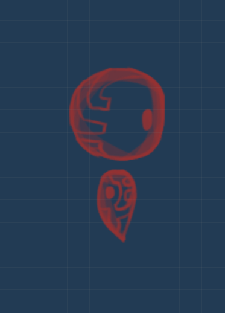

Currently Jin is leading a group of graduate student journalists in a research collaboration
with St. Mark Community Education Program in the Boston area.
The non-profit organization was founded in 1996 in Dorchester, Massachusetts.
This volunteer-run group provides free ESL courses as well as citizenship exam classes.
For over 20 years, volunteers at St. Mark's offered multiple classes throughout the week in
public locations. With the onset of COVID-19 physical distancing and safety guidelines in spring 2020, St. Mark
moved to virtual classes for the first time.
Most of their infrastructure is not online, so the group is seeking solutions to better their online course offerings
and general community outreach. Through surveys and focus group interviews, our group is collecting data through late March
before analyzing our qualitative and quantitative data.
The St. Mark ESOL website.

This ambitious research project was started when Jin was still in Northeastern University's graduate Game Science and Design program.
He worked with Sidan Fan (Lead Programmer, Lead Artist/Character Designer) and Sonya Mccree (Co-Narrative Designer, Assistant Artist/Level Designer)
under the supervision of Dr. Sercan Sengun.
The results of our research were published in the Springer Book
Game User Experience and Player-Centered Design" in early 2020.
The purpose of this research was to create a video game experiment that would study player behaviors in certain situations.
The main variables we tested in players were "conformity" and "empathy."
Initially, we believed there would be groups of players that fell into "compliance" and "non-compliance" with the game's directives.
We hypothesized that players, once learning more about the game's backgrounds and story, would begin to empathize with the "enemy" characters,
and thus lean toward non-compliance.

Our character designer purposely created family dynamics in enemy characters.
While there is a plethora of psychological research on conformity, there are fewer games that serve as examinations of such.
Some of the games we analyzed were "Loved" (2010), a flash-game by Alexander Ocias, as well as "The Stanley Parable" (2013).
Other supplementary research involved analyses including Richard S. Crutchfield's seminal work from 1954 on "conformity and character."
In the future, Jin would like to return to this line of research
and create a more streamlined research game.